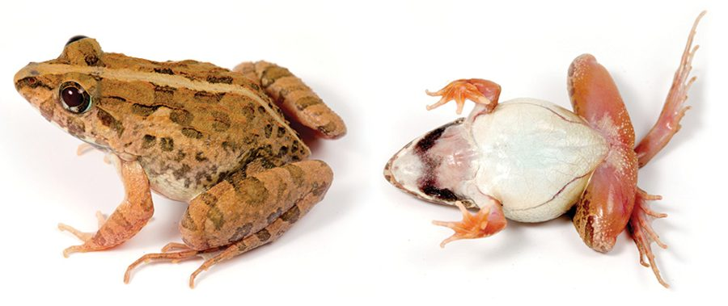

फुदकी मेंढकAsian Grass Frog
Fejervarya limnocharis · Dicroglossidae · AMP-0006

- Scientific name
- Fejervarya limnocharis (Gravenhorst, 1829)
- Family
- Dicroglossidae
- Hindi
- फुदकी मेंढक
- Status here
- native
- IUCN
- LC
When to look कब देखें
Present all year.
फुदकी मेंढक / Asian Grass Frog
Fejervarya limnocharis (Gravenhorst, 1829) — Dicroglossidae
फुदकी मेंढक (एशियन ग्रास फ्रॉग) — पूर्वी उत्तर प्रदेश के धान के खेतों, गीले मैदानों और जलस्रोतों के किनारों पर पाया जाने वाला सबसे आम मेंढक है। मध्यम आकार (35 से 55 मिलीमीटर) का यह जीव अपनी मस्सेदार (tuberculate) त्वचा और पीठ पर दिखने वाली एक पतली पीली-हरी मध्य रेखा (vertebral line) के लिए पहचाना जाता है। मानसून की रातों में धान के खेतों से उठने वाली तीव्र, झींगुर जैसी आवाज़ (rapid cricket-like pulse) मुख्य रूप से इसी प्रजाति की होती है। कृषि पारिस्थितिकी तंत्र में यह कीड़े-मकोड़ों, विशेष रूप से धान के हानिकारक कीटों का भारी मात्रा में शिकार कर प्राकृतिक रूप से फसल की रक्षा करता है।
Quick Identification त्वरित पहचान
| Feature | Description |
|---|---|
| Size | Medium size (35–55 mm snout-vent length); males slightly smaller than females |
| Skin | Distinctly tuberculate (warty) upperparts with longitudinal skin folds |
| Colouration | Greyish-brown or olive-green above, often with dark spots; throat white |
| Dorsal Stripe | Many individuals show a prominent, pale cream or greenish line down the spine |
| Snout | Pointed head with a distinct dark W-shaped mark between the shoulders |
| Movement | Makes rapid, short, zigzag leaps when disturbed in grass |
Field tip: Walk along wet grassy field borders or flooded paddies during monsoon evenings. Look for a small, spotted frog leaping rapidly in a zigzag pattern ahead of your footsteps.
Morphology आकारिकी
Biometrics (typical measurements in the northern Indian plains):
| Measurement | Range |
|---|---|
| Snout-vent length (SVL) | 35–55 mm |
| Weight | 8–18 g |
Description: The Asian Grass Frog is a moderate-sized frog with a pointed snout and rather slender body. The dorsal skin is not smooth but covered with irregular longitudinal folds and small warts. The dorsal color is highly variable, ranging from light grey to dark olive-brown, decorated with symmetrical dark blotches. A prominent, thin cream-white or bright green vertebral line is present in about half of the population. The hind limbs are long, with fingers free and toes half-webbed.
Males possess a single vocal sac under the throat, which turns bluish-black when calling during the breeding season.
Behaviour & Ecology व्यवहार और पारिस्थितिकी
This species is active during the day but shows peak calling and breeding activity at night.
- Agricultural affinity: It is the dominant amphibian species in the rice-growing ecosystems of eastern UP. They adapt perfectly to seasonal flood-and-dry cycles of paddy cultivation.
- Dormancy: During the dry, cold winter months (December to February), they bury themselves in loose soil, mud cracks, or under piles of crop residue, emerging in early summer.
- Calling behavior: During the monsoon, males gather in hundreds in flooded fields. The call is a loud, rapid, repetitive "tick-tick-tick" or "crick-crick-crick" resembling a cricket or a rattle.
Tadpole Stage
- Body form and size: The tadpole has an oval, moderately flat body with a tall tail fin, reaching about 25–30 mm in total length at maturity.
- Aquatic habitat preference: Prefers shallow, stagnant water bodies such as flooded rice paddies, rain-fed pools, and muddy ditches.
- Duration to metamorphosis: Development is quick, taking approximately 4 to 5 weeks from hatching to froglet stage.
- Distinguishing features: Brownish-grey colouration with dark speckles; possess small rows of teeth around the mouthparts for scraping algae and detritus.
Life Cycle / Phenology जीवन चक्र
- Breeding season: June to September, matching the southwest monsoon.
- Amplexus: Axillary amplexus occurs at night in shallow water.
- Eggs: The female deposits up to 800–1,500 small eggs in small gelatinous masses attached to submerged grass or resting on muddy bottoms.
- Hatching: Eggs hatch within 24 to 36 hours. Metamorphosing froglets leave the pools in August and September.
Host Plants or Prey आहार
Primary food items:
- Insects: Grasshoppers, small beetles, leafhoppers, and ants.
- Agricultural pests: Rice plant hoppers, leaf folders, and mosquito larvae.
- Other invertebrates: Earthworms and tiny spiders.
Predators / Natural Enemies शत्रु
- Birds: Cattle Egrets (Bubulcus ibis), Indian Pond Herons (Ardeola grayii), and White-throated Kingfishers (Halcyon smyrnensis).
- Snakes: Checkered Keelbacks (Xenochrophis piscator) and Buff-striped Keelbacks (Amphiesma stolatum).
- Mammals: Small Indian Mongooses (Herpestes auropunctatus) forage on them along field borders.
Agricultural / Human Relevance कृषि प्रासंगिकता
Farming ally. By consuming enormous quantities of crop-damaging insects in flooded paddy fields, they serve as a critical component of integrated pest management (IPM) in eastern UP villages. Their presence dramatically reduces the need for chemical pesticide sprays. However, pesticide runoff in rice fields is a major cause of mortality for their tadpoles.
Expected Locally स्थानीय रूप से अपेक्षित
Not a field record. Written from published accounts for eastern Uttar Pradesh. No confirmed local sighting yet — if you have seen it, that is what the atlas needs.
अभी तक स्थानीय पुष्टि नहीं। यह विवरण प्रकाशित स्रोतों से है, किसी अवलोकन से नहीं।
Extremely common in Basti district, especially in the agricultural belts of Harraiya, Khalilabad, and rural Basti. In monsoon, they can be seen under streetlights in villages catching insects. Their high-pitched collective calls make it difficult to hear other sounds near paddy fields in July.
Distribution वितरण
Global range: Widespread across South and Southeast Asia, from India and Nepal to China, Japan, Thailand, Malaysia, and Indonesia.
In India: Found throughout the plains and lower hills of the country.
In Uttar Pradesh: Abundant resident across all river basins and agricultural plains.
In Basti district / eastern UP: Found in high densities in all waterlogged croplands, village ponds, and domestic gardens.
Research Questions शोध प्रश्न
Anyone can investigate these | कोई भी इन प्रश्नों की जाँच कर सकता है
- What is the percentage of individuals in Basti populations that exhibit the green vertebral stripe vs. those without? — Count and compare individuals in different fields.
- How does calling rate change with the intensity of rainfall? — Measure call frequency under light drizzle vs. heavy downpour.
- Are Fejervarya limnocharis populations higher in organic rice fields compared to conventional chemical-heavy fields? / क्या रासायनिक उर्वरकों के उपयोग वाले खेतों की तुलना में जैविक धान के खेतों में फुदकी मेंढक की आबादी अधिक होती है? — Conduct transect counts in both field types.
- How do their tadpoles survive in temporary pools that dry up within two weeks? — Investigate physiological adaptations or accelerated growth.
- What is the primary prey of this species during the dry post-monsoon crop harvest period? / सूखी फसल कटाई के दौरान इस मेंढक का मुख्य भोजन क्या होता है? — Collect fecal samples to study changes in diet.
Similar Species मिलती-जुलती प्रजातियाँ
| Species | Key Difference | हिंदी |
|---|---|---|
| Hoplobatrachus tigerinus (Indian Bull Frog) | Much larger (up to 170 mm); green and yellow breeding colors; heavy body; massive leaps | बड़ा मेंढक — आकार में बहुत बड़ा और भारी शरीर |
| Hoplobatrachus crassus (Jerdon's Bullfrog) | Larger (SVL up to 100 mm); stouter head; uniform bronze-brown without dorsal line | चित्तीदार मेंढक — भारी सिर और कोई रीढ़ की पट्टी नहीं |
| Microhyla ornata (Ornate Narrow-mouthed Frog) | Tiny (18–25 mm); smooth bronze skin; arrow-shaped mark on back; narrow head | छोटा मेंढक — छोटा आकार और पीठ पर तीर का निशान |
Field rule: Medium size (3–5 cm), rough warty skin with long wrinkles, pointed snout, and a light line running down the spine in many individuals.
Taxonomy & Classification वर्गीकरण
Original description. Johann Christoph Gravenhorst described the Asian Grass Frog as Rana limnocharis in 1829 in his work Deliciae Musei Zoologici Vratislaviensis (p. 42). The type locality was Java, Indonesia. The genus name Fejervarya was established in 1998 by Alain Dubois to honor the Hungarian zoologist Géza Gyula Fejérváry. The species epithet limnocharis is derived from the Greek limne (pool or marsh) and charis (grace or beauty), describing its preference for wetlands.
Subspecies. Monotypic.
Family and order placement. Placed in the order Anura, family Dicroglossidae (fork-tongued frogs), subfamily Dicroglossinae.
Phylogenetic notes. Fejervarya limnocharis represents a species complex. Future molecular analysis may further split regional populations, but they are currently treated under this name.
IUCN status rationale. Listed as Least Concern (LC) because of its wide range, tolerance to habitat modification, and large populations.
Photo Gallery फोटो गैलरी
References संदर्भ
- Gravenhorst, J. C. (1829). Deliciae Musei Zoologici Vratislaviensis. Fasciculus I. Leipzig, p. 42. [original description]
- Dubois, A. (1998). List of genera and subgenera of Ranidae. Alytes, 15(4), 161-172.
- Dutta, S. K. & Manamendra-Arachchi, K. (1996). The Amphibian Fauna of Sri Lanka. Wildlife Heritage Trust, Colombo. [Fejervarya limnocharis biometrics and distribution]
- Daniel, J. C. (2002). The Book of Indian Reptiles and Amphibians. Bombay Natural History Society / Oxford University Press, Mumbai.
- IUCN SSC Amphibian Specialist Group (2024). Fejervarya limnocharis. IUCN Red List of Threatened Species. Ver. 2024.
- GBIF Occurrence Data — Fejervarya limnocharis, Uttar Pradesh (2010–2025).
Source file: species/fauna/amphibians/asian_grass_frog.md